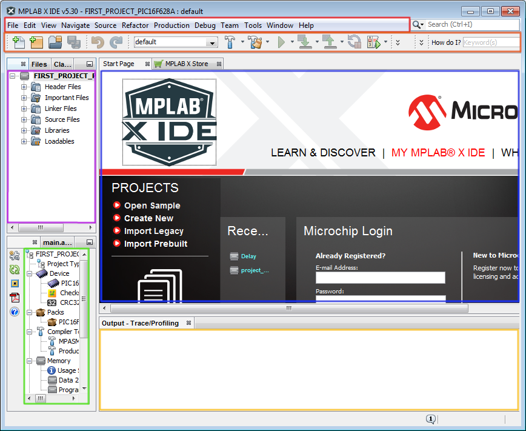
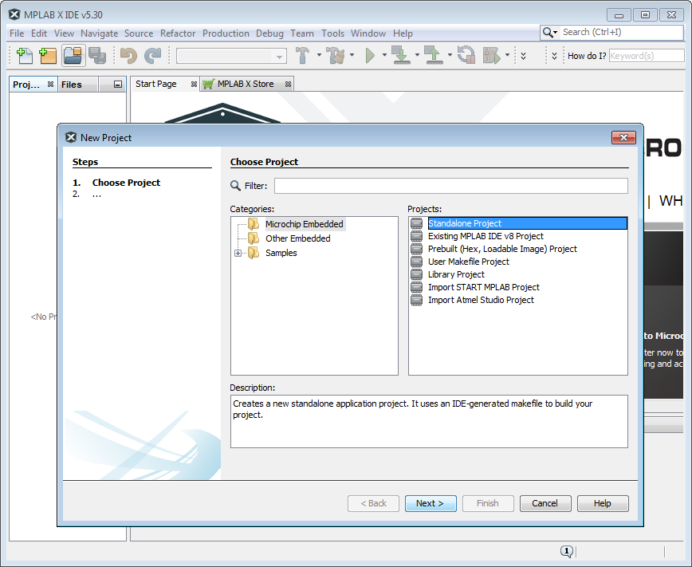
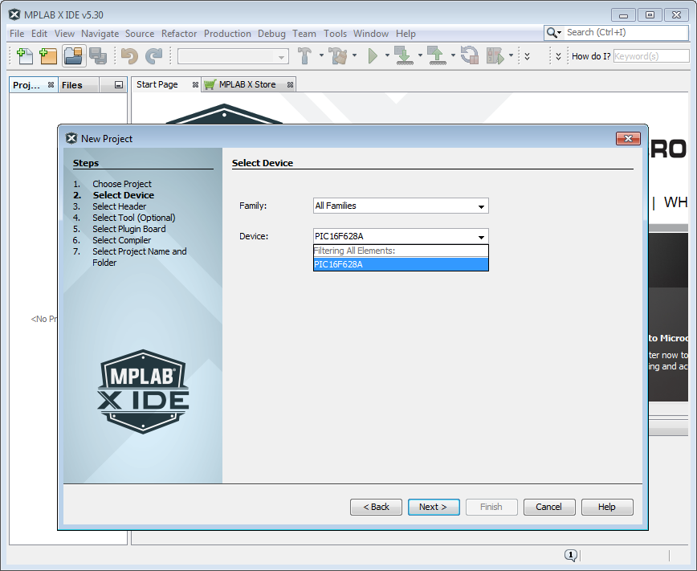
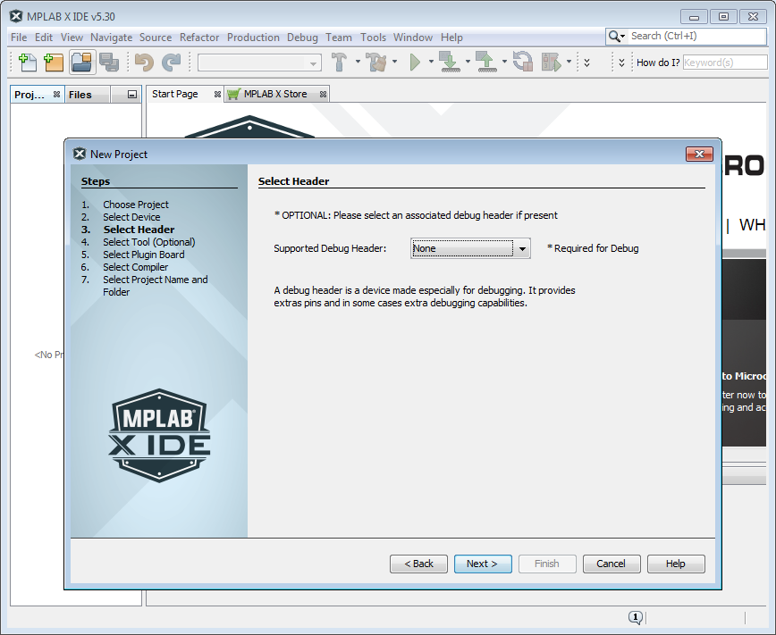
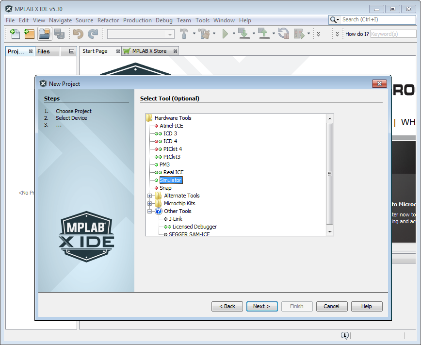
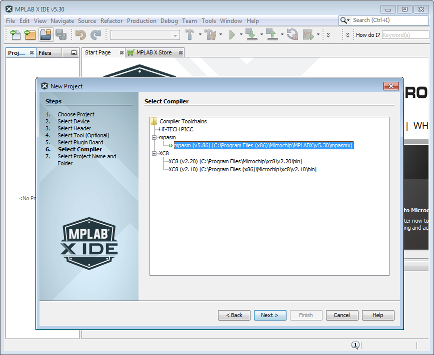
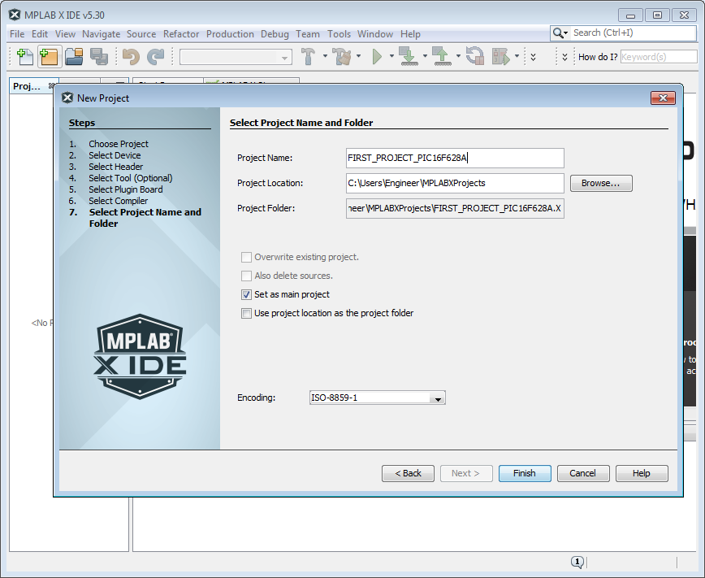
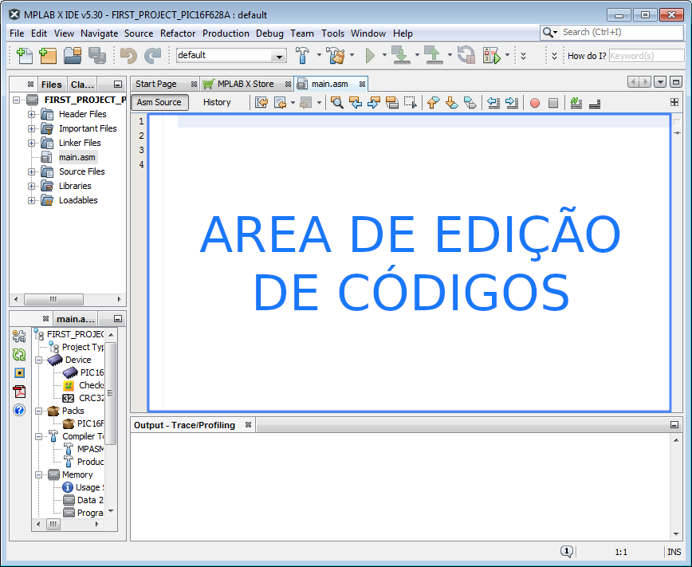
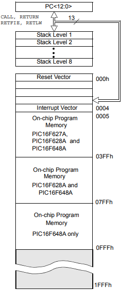
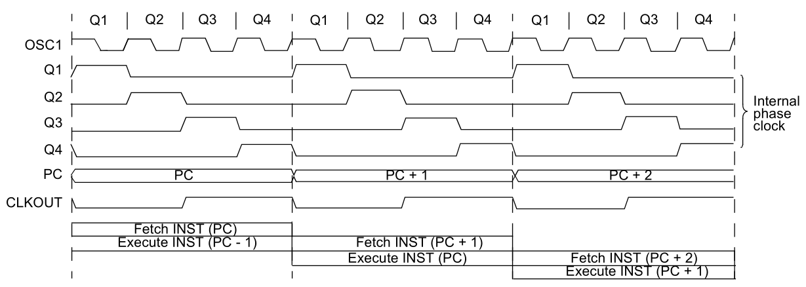

Episódio 2: Conhecendo o MPLAB X IDE, a estrutura de um arquivo em assembly, básico de números binários, octais e hexadecimais, e esquema de clock e ciclo de instrução.
Neste episódio veremos como é o processo de criação de um projeto no MPLAB X IDE, criação de um arquivo em assembly (ASM) com sua estrutura (diretiva INCLUDE, bits de configuração em _CONFIG, diretivas DEFINE para definições de espaços de memória ou procedimento e endereço do vetor reset (0x00) e interrupção (0x04)).
Começaremos conhecendo o MPLAB X IDE 5.30, disponível no endereço https://www.microchip.com/development-tools/pic-and-dspic-downloads-archive e na Figura 2.1 pode ser visto a interface da IDE, sendo que esta (MPLAB X IDE) é a IDE oficial da Microchip para edição de projetos para microcontroladores PIC.
Na Figura 2.1 há 6 retângulos que representam as partes da tela da IDE, onde o retângulo em vermelho representa a barra dos menus, o segundo retângulo laranja é a barra de ferramentas, o terceiro retângulo em rosa é o "box" de projetos, o quarto retângulo em azul é a área de informações de inicialização da IDE e também principalmente, onde são exibidos os arquivos para edição do código, o quinto retângulo em verde a caixa de Dashboard, e o sexto e último retângulo, em amarelo, é o "box" de informações (compilação) ou configurações (debug) dos processos terminados ou em execução.
Conhecendo a tela inicial do programa, podemos criar nosso primeiro projeto para o PIC16F628A, seguindo os seguintes passos:
IMPORTANTE: Essas versões de compiladores e IDE são obtidas em https://www.microchip.com/development-tools/pic-and-dspic-downloads-archive
IMPORTANTE: Caso necessite voltar ainda aqui neste assistente de criação de projeto, utilize o botão .
| Figura 2.1 - Tela do MPLAB X IDE 5.30 |
|---|
|  |
| Fonte: Autor 2020 |
| Figura 2.2 - Escolha do tipo de projeto |
|---|
|  |
| Fonte: Autor 2020 |
| Figura 2.3 - Seleção do modelo do microcontrolador |
|---|
|  |
| Fonte: Autor 2020 |
| Figura 2.4 - Seleção de cabeçalho |
|---|
|  |
| Fonte: Autor 2020 |
| Figura 2.5 - Seleção da ferramenta de depuração e gravação |
|---|
|  |
| Fonte: Autor 2020 |
| Figura 2.6 - Seleção do compilador |
|---|
|  |
| Fonte: Autor 2020 |
| Figura 2.7 - Nome e seleção do diretório para o projeto |
|---|
|  |
| Fonte: Autor 2020 |
Os procedimentos anteriores para a criação, apenas disponibilizam a criação do projeto, sem a inclusão de arquivo base para a codificação e para isso teremos que criar um arquivo para podermos conhecer o padrão de codificação no PIC16F628A.
Para a criação do arquivo .asm, siga os seguintes passo:
| Figura 2.8 - Arquivo main.asm criado e aberto para edição |
|---|
|  |
| Fonte: Autor 2020 |
Na Figura 2.8, o arquivo main.asm foi aberto automaticamente ao final do processo de criação dele, porém ele está vazio decorrente de ainda não ter sido feito uso de comandos de programação, que veremos a seguir.
Começaremos conhecendo o arquivo base para o nosso trabalho, que será usado até o 27º episódio (pois do episódio 1 ao 27 usa-se a linguagem assembly enquanto que o 28º episódio faz uso da linguagem C) desta série de uso do microcontrolador PIC16F628A, sendo que o arquivo base "Codigo 2.1 - Exemplo base.asm" é exibido no Código 2.1 e o download pode ser feito em https://github.com/KyryIx/programando-com-o-microcontrolador-PIC16F628A.
O Código 2.1 é o nosso arquivo base para assembly, no qual foi inserido a numeração de linhas à esquerda como forma de facilitar a referência no texto, mas que não compõem o padrão de arquivo.
Começamos notando que as linhas 1, 2 e 3 iniciam com o caracter ; que em assembly representa linha de comentário, e assim essas linhas foram usadas como comentário inicial do arquivo base.
| Código 2.1 - Exemplo base |
|---|
|
| Fonte: Autor 2020 |
A linha 4 do Código 2.1 representa a inclusão (INCLUDE) de um arquivo de cabeçalho de microcontrolador usado no projeto, que neste caso é o PIC16F628A e ele é acessível no endereço C:\Program Files (x86)\Microchip\MPLABX\v5.30\mpasmx\p16f628a.inc, no qual tem as definições de nome dos registros e seus respectivos endereços de memória, como nomes de bits e suas posições no byte.
Já a linha 5 do Código 2.1, ela é a linha que lista (LIST) o microcontrolador em uso no projeto, enquanto que a linha 6 é responsável pelas configurações (__CONFIG) de parâmetros para uso do microcontrolador e eles são visto na Tabela 2.1 e esta informação está conforme item 14.0 (SPECIAL FEATURES OF THE CPU) do datasheet (Microchip 2020 (b) pag. 98).
| Tabela 2.1 - Bits de configuração | ||||||||||||||||
|---|---|---|---|---|---|---|---|---|---|---|---|---|---|---|---|---|
|
||||||||||||||||
| Fonte: Microchip 2020 (b) pag. 98 |
As linhas 9 e 10 do Código 2.1 são as linhas de definição de constantes ou variáveis, sendo que neste exemplo foi definido que a palavra BOTAO que representará o bit RB0 do registrador PORTB enquanto que a palavra CONTADOR representa o valor 0x20 (em hexadecimal), que será usado neste exemplo como endereço de memória.
Iremos fazer uso da diretiva #DEFINE para definir constantes ou endereços de registradores que iremos associar a estados ou quantidades que desejamos armazenar.
As linhas 12 e 15 do Código 2.1 são linhas de endereços de memória de programação onde 0x00 representa o endereço de reset do microcontrolador, onde o microcontrolador inicializa, e é neste endereço que ele começa a execução de código, enquanto que o endereço 0x04 é o endereço no qual há a primeira instrução a ser executada apenas quando houver uma interrupção e a chave geral das interrupções estiverem ativas como também as respectivas chaves individuais das interrupções.
Na linha 13 há a instrução GOTO, que salta (GO TO) para o rótulo SETUP_PROCESSO, que está na linha 18, enquanto que na linha 16 há a instrução RETFIE, que é responsável por retornar de uma subrotina de interrupção (RETurn From IntErrupt).
Já nas linhas 18, 82, 87 e 89 estão os rótulos para uso em subrotinas, no qual podem ser criados vários rótulos para serem tratados com subrotinas e facilitar o desenvolvimento da aplicação.
Na linha 94 tem a instrução de finalização do código/arquivo assemblye nela contém a diretiva END.
As outras linhas contidas no arquivo assembly, são linhas de instrução necessárias para a lógica da solução proposta para um determinado problema e veremos essas instruções ao longo dos episódios.
Conforme visto no arquivo assembly, existem linhas que contêm comando que fazem uso de números escritos como 0x04 e outros como B'11111111'. Essas formas de escrever números permitem fazer uso aqui de dois tipos de sistema numérico, sendo eles o sistema numérico hexadecimal (base 16) e o sistema numérico binário (base 2).
No sistema numérico decimal como conhecemos, fazemos uso de 10 algarismos para representar qualquer quantidade, fazendo um de um sistema posicional, e assim esses algarismos são 0, 1, 2, 3, 4, 5, 6, 7, 8 e 9. Já no sistema numérico hexadecimal, há 16 algarismos para fazer uso no sistema posicional e eles são 0, 1, 2, 3, 4, 5, 6, 7, 8, 9, A, B, C, D, E e F, e como isso o mesmo número 10 na base decimal é igual ao número A na base hexadecimal, enquanto que o número FE na base hexadecimal é igual a número 254 na base decimal.
Ao escrever códigos para PIC16F628A pode-se também utilizar de números no sistema numérico binário (base 2) no qual existem apenas 2 algarismos para uso sendo eles o 0 e o 1.
O mesmo número 10 em decimal, A em hexadecimal, será 1010 em binário. E por último existe ainda o sistema numérico octal composto dos algarismo 0, 1, 2, 3, 4, 5, 6 e 7, no qual é pouco utilizado, mas que é bom conhecer e assim conforme a Tabela 2.2, tem-se a relação entre os quatro sistemas numéricos.
| Tabela 2.2 - Equivalência de números nos sistemas numéricos | |||||||||||||||||||||||||||||||||||||||||||||||||||||||||||||||||||||||||||||
|---|---|---|---|---|---|---|---|---|---|---|---|---|---|---|---|---|---|---|---|---|---|---|---|---|---|---|---|---|---|---|---|---|---|---|---|---|---|---|---|---|---|---|---|---|---|---|---|---|---|---|---|---|---|---|---|---|---|---|---|---|---|---|---|---|---|---|---|---|---|---|---|---|---|---|---|---|---|
| |||||||||||||||||||||||||||||||||||||||||||||||||||||||||||||||||||||||||||||
| Fonte: Autor 2020 |
Para saber mais sobre sistemas numéricos recomendo ler (BORBA, 2020) e vídeos sobre operações e conversões sobre estes sistemas em (CRUZ, 2020).
Agora que sabemos como funcionam os sistemas numéricos, veremos como representar eles dentro do MPASM™ Assembler da Microchip e para isso faz-se uso do documento (Microchip 2013 pag. 67) no qual dispõe da Tabela 2.3 que especifica o formato dos números no montador assembly MPASM.
Assim, quando houver necessidade de tratar individualmente estados ou endereços de memória, iremos fazer uso do sistema numérico binário, octal ou hexadecimal e quando houver necessidade de contagem de objetos, iremos usar o sistema numérico decimal.
Agora após vermos a estrutura do arquivo base em assembly e a forma de expressar quantidades e estados com 4 sistemas numéricos, veremos como é feito a execução das instruções, sem adentrar no escopo do que cada instrução faz, pois serão abordados nos próximos episódios.
| Tabela 2.3 - Notação dos números no montador MPASM | |||||||||||||||||||
|---|---|---|---|---|---|---|---|---|---|---|---|---|---|---|---|---|---|---|---|
| |||||||||||||||||||
| Fonte: Microchip 2013 pag. 67 |
Conforme a Figura 2.9, pode-se ver que na posição de memória 000h (0x000) tem-se o vetor de reset, na posição 0004h (0x0004) o vetor de interrupção, da posição 0005h (0x0005) em diante tem-se a memória de programa incluída no chip.
Na Figura 2.9 ainda, pode-se ver ainda que a memória de programa do PIC16F628A começa em 0005h e vai até 07FFh totalizando 2048 palavras (000h até 07FFh). Temos ainda a pilha (stack) que é composta de 8 níveis no qual pode ser usado para armazenar chamadas de subrotinas.
| Figura 2.9 - Mapa de memória de programa e pilha |
|---|
|  |
| Fonte: Microchip (2020b) pag. 17 |
E agora para terminarmos este episódio,nós veremos o esquema de clock e ciclo de instrução que nos ajudará a entender como funciona o conceito de tempo dentro do PIC16F628A.
Na Figura 2.10 pode-se ver que há uma linha com o nome de OSC1 (clock de entrada), no qual pode ser inserido pelo pino RA7 ou gerado internamente, e esse clock é divido por 4 gerando Q1, Q2, Q3 e Q4. Assim, internamente o contador de programa (Program Counter - PC) é incrementado em Q1, e a instrução é decodificada e executada durante o ciclo Q1 até ciclo Q4, mas enquanto uma instrução está sendo carregada (Fetch INST (PC)), a anterior que já foi carregada está sendo executada (Execute INST (PC - 1)) conforme Figura 2.10. Assim, um ciclo de instrução consiste dos quatro ciclos, Q1 a Q4.
| Figura 2.10 - Clock e ciclo de instrução |
|---|
|  |
| Fonte: Microchip (2020b) pag. 15 |
Quando chegarmos no episódio 10, no qual falaremos em contagem de tempo, voltaremos a Figura 2.10 para utilizarmos o conceito de clocke ciclo de instrução para criação de subrotinas de temporizadores (delays).